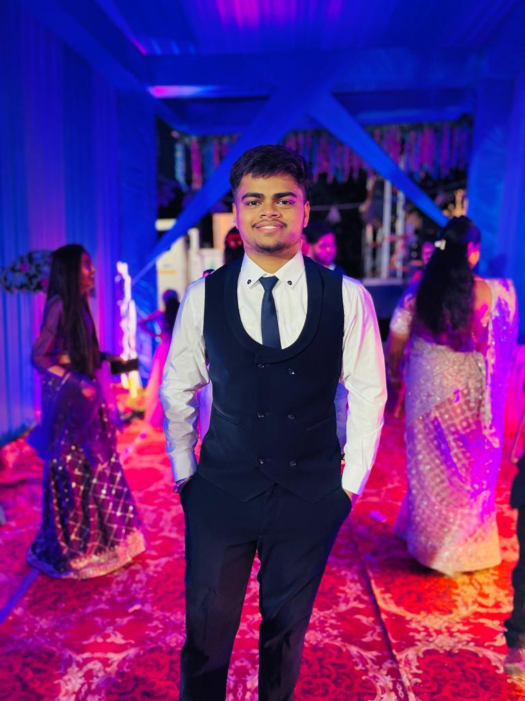

Hi everyone 👋, I'm Het Patel
Web Designer
Based in India
I'm a UI/UX designer I specialize in crafting visually stunning and user-friendly digital experiences that not only meet business goals but also resonate with users on a deeper level. With a strong passion for design, I blend creativity with functionality to deliver intuitive interfaces and seamless interactions. My expertise spans across web design, mobile app development, and brand identity, ensuring cohesive and impactful digital solutions. Whether it's building pixel-perfect layouts or enhancing user journeys, I’m dedicated to bringing ideas to life with precision and innovation. Let’s collaborate to create designs that inspire and engage
